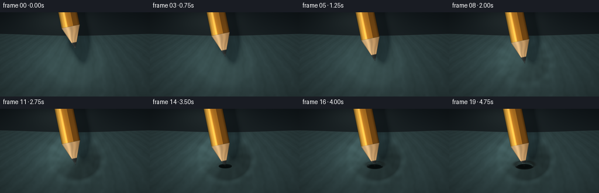
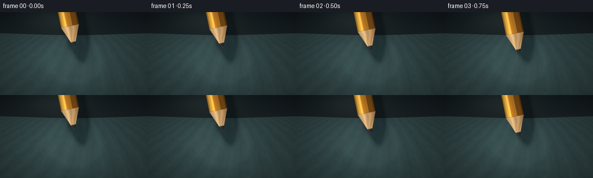

CODING AGENTS AS PIXEL WORLD MODELS
traex/DeepSeek-V4.1-Flash · phygen_022
点击播放 · 原生 RGB 像素
逐轮保存的候选
回放视频、检查图与代码变化。
每份候选均可单独播放。实际图片检查记录在下方工具轨迹中。
候选 01播放与检查图
点击播放 · 原生 RGB 像素


展开代码变化
--- 上一保存版本
+++ 本次保存版本
@@ -0,0 +1,326 @@
+"""Procedural RGB render: a pencil slowly piercing taut rubber.
+
+Everything is drawn from analytic geometry and local noise. The renderer works
+at 4x resolution and downsamples once per frame for clean edges at 256x144.
+"""
+
+from pathlib import Path
+
+import numpy as np
+from PIL import Image, ImageFilter
+from scipy.ndimage import gaussian_filter, map_coordinates
+
+import artifact_io
+
+
+CASE_DIR = Path(__file__).resolve().parent
+WIDTH, HEIGHT = 256, 144
+SCALE = 4
+W, H = WIDTH * SCALE, HEIGHT * SCALE
+FRAMES = 20
+FPS = 4.0
+
+
+def smoothstep(edge0, edge1, x):
+ x = np.clip((x - edge0) / (edge1 - edge0), 0.0, 1.0)
+ return x * x * (3.0 - 2.0 * x)
+
+
+def normalize01(a):
+ lo, hi = float(a.min()), float(a.max())
+ return (a - lo) / max(hi - lo, 1e-6)
+
+
+def make_background():
+ y = np.linspace(0.0, 1.0, H, dtype=np.float32)[:, None]
+ x = np.linspace(0.0, 1.0, W, dtype=np.float32)[None, :]
+ yy = np.broadcast_to(y, (H, W))
+ xx = np.broadcast_to(x, (H, W))
+
+ top = np.array([13.0, 19.0, 22.0], dtype=np.float32)
+ bottom = np.array([31.0, 39.0, 40.0], dtype=np.float32)
+ bg = top[None, None, :] * (1.0 - yy[..., None]) + bottom[None, None, :] * yy[..., None]
+
+ glow = np.exp(-(((xx - 0.38) / 0.33) ** 2 + ((yy - 0.08) / 0.22) ** 2) * 2.0)
+ bg += glow[..., None] * np.array([10.0, 12.0, 11.0], dtype=np.float32)
+ bg += (0.5 - 0.5 * np.cos(xx * np.pi * 2.0))[..., None] * np.array([1.5, 1.2, 0.9])
+ return bg.astype(np.float32)
+
+
+BACKGROUND = make_background()
+
+rng = np.random.default_rng(2208)
+_coarse = normalize01(gaussian_filter(rng.normal(size=(H // 8, W // 8)).astype(np.float32), 1.6))
+COARSE = np.asarray(
+ Image.fromarray((_coarse * 255).astype(np.uint8)).resize((W, H), Image.Resampling.BICUBIC),
+ dtype=np.float32,
+) / 255.0
+_fine = rng.normal(size=(H, W)).astype(np.float32)
+FINE = normalize01(gaussian_filter(_fine, 0.7))
+_cloud = rng.normal(size=(H // 20, W // 20)).astype(np.float32)
+CLOUD = np.asarray(
+ Image.fromarray((normalize01(_cloud) * 255).astype(np.uint8)).resize(
+ (W, H), Image.Resampling.BICUBIC
+ ),
+ dtype=np.float32,
+) / 255.0
+
+YY, XX = np.mgrid[0:H, 0:W].astype(np.float32)
+
+
+def render_rubber(t, depth, contact_x, contact_y, hole_amount):
+ """Render the tensioned membrane, including perspective and elastic warp."""
+ top_edge = 153.0 + 7.0 * np.cos((XX / W - 0.5) * np.pi * 1.6)
+ sheet_alpha = smoothstep(top_edge - 2.0, top_edge + 3.0, YY)
+
+ v = np.clip((YY - 145.0) / (H - 145.0), 0.0, 1.0)
+ u = (XX - W * 0.5) / (0.36 + 0.92 * v)
+ perspective = 0.55 + 0.45 * v
+
+ # Long, shallow stretch marks plus fine rubber grain.
+ broad = gaussian_filter(COARSE - 0.5, 5.0)
+ stretch = np.sin(u * 0.048 + 2.2 * broad + v * 7.0)
+ stretch = np.sign(stretch) * np.abs(stretch) ** 4.0
+ grain = (FINE - 0.5) * 4.0 + (CLOUD - 0.5) * 8.0
+
+ sheen = np.exp(-(((XX - 390.0) / 390.0) ** 2 + ((YY - 310.0) / 235.0) ** 2) * 1.9)
+ base_rgb = np.empty((H, W, 3), dtype=np.float32)
+ base_rgb[..., 0] = 27.0 + 5.0 * perspective + 5.0 * sheen
+ base_rgb[..., 1] = 39.0 + 7.0 * perspective + 8.0 * sheen
+ base_rgb[..., 2] = 40.0 + 7.0 * perspective + 8.0 * sheen
+ base_rgb += (stretch * 2.4 + grain * 0.38)[..., None] * np.array([0.72, 0.92, 1.0])
+
+ # A soft pool of studio light gives the dark rubber readable form.
+ pool = np.exp(-(((XX - 505.0) / 330.0) ** 2 + ((YY - 365.0) / 245.0) ** 2) * 1.7)
+ base_rgb += pool[..., None] * np.array([6.0, 8.0, 7.0], dtype=np.float32)
+
+ # Radial displacement is the actual elastic dimple. It also warps the
+ # material grain toward the contact point.
+ sigma = 142.0
+ dx = XX - contact_x
+ dy = (YY - contact_y) * 1.16
+ rr = np.sqrt(dx * dx + dy * dy)
+ core = np.exp(-(rr / sigma) ** 2)
+ rim = np.exp(-((rr - sigma * 1.23) / (sigma * 0.24)) ** 2)
+ disp = depth * core - depth * 0.075 * rim
+ disp_x = -depth * 0.11 * dx / (rr + 18.0) * core
+ sample_x = np.clip(XX - disp_x, 0, W - 1)
+ sample_y = np.clip(YY - disp, 0, H - 1)
+ warped = np.empty_like(base_rgb)
+ for c in range(3):
+ warped[..., c] = map_coordinates(
+ base_rgb[..., c], [sample_y, sample_x], order=1, mode="reflect"
+ )
+
+ # Surface normals from the screen-space slope create a dark near wall and
+ # a bright far wall around the depression.
+ gy, gx = np.gradient(disp)
+ nx = -gx * 3.2
+ ny = -gy * 2.5
+ nz = np.ones_like(nx)
+ norm = np.sqrt(nx * nx + ny * ny + nz * nz)
+ nx, ny, nz = nx / norm, ny / norm, nz / norm
+ light = np.array([-0.50, -0.64, 0.58], dtype=np.float32)
+ diffuse = np.maximum(nx * light[0] + ny * light[1] + nz * light[2], 0.0)
+ flat = light[2]
+ shade = 0.74 + 0.42 * diffuse / flat
+
+ # Circumferential tension wrinkles grow only while the sheet is loaded.
+ theta = np.arctan2(dy, dx)
+ load = smoothstep(0.0, 18.0, depth)
+ wrinkle_env = np.exp(-((rr - sigma * 1.12) / (sigma * 0.76)) ** 2)
+ wrinkle = np.sin(theta * 13.0 + np.sin(rr * 0.028) * 1.2) * wrinkle_env * load
+ wrinkle *= np.exp(-((rr - sigma * 1.3) / (sigma * 0.6)) ** 2)
+ warped += (wrinkle * 2.8 + rim * 3.4)[..., None] * np.array([0.66, 0.88, 0.9])
+ warped *= shade[..., None]
+
+ # A compressed, darker ring is visible just outside a pierced opening.
+ if hole_amount > 0.001:
+ hx = (XX - contact_x) / (43.0 + 19.0 * hole_amount)
+ hy = (YY - (contact_y + depth * 0.69)) / (14.0 + 8.0 * hole_amount)
+ hole_ring = np.exp(-((np.sqrt(hx * hx + hy * hy) - 1.0) / 0.30) ** 2)
+ warped *= (1.0 - hole_ring * hole_amount * 0.38)[..., None]
+ warped += hole_ring[..., None] * hole_amount * np.array([3.0, 2.0, 1.0])
+
+ # Sheet edge catches a narrow cool highlight.
+ edge_line = np.exp(-((YY - top_edge) / 1.8) ** 2)
+ warped += edge_line[..., None] * np.array([17.0, 21.0, 20.0])
+
+ out = BACKGROUND * (1.0 - sheet_alpha[..., None]) + warped * sheet_alpha[..., None]
+ return out.astype(np.float32), disp, top_edge
+
+
+def pencil_geometry(tip_x, tip_y, shadow_shift=(0.0, 0.0)):
+ """Return pencil masks and coordinates in its local axial frame."""
+ theta = 0.205
+ ex, ey = -np.sin(theta), -np.cos(theta)
+ px, py = -ey, ex
+ sx = XX - tip_x - shadow_shift[0]
+ sy = YY - tip_y - shadow_shift[1]
+ axial = sx * ex + sy * ey
+ cross = sx * px + sy * py
+ half_width = 64.0
+ cone_length = 158.0
+ cone_radius = half_width * np.clip(axial / cone_length, 0.0, 1.0)
+ cone_alpha = smoothstep(cone_radius + 1.6, cone_radius - 1.6, np.abs(cross))
+ cone_alpha *= smoothstep(-1.8, 1.8, axial) * smoothstep(cone_length + 1.8, cone_length - 1.8, axial)
+ body_alpha = smoothstep(half_width + 1.7, half_width - 1.7, np.abs(cross))
+ body_alpha *= smoothstep(cone_length - 2.0, cone_length + 2.0, axial)
+ alpha = np.maximum(cone_alpha, body_alpha)
+ return axial, cross, alpha, body_alpha, cone_alpha, half_width
+
+
+def render_pencil(tip_x, tip_y):
+ axial, cross, alpha, body_alpha, cone_alpha, half_width = pencil_geometry(tip_x, tip_y)
+ q = cross / half_width
+
+ rgb = np.zeros((H, W, 3), dtype=np.float32)
+
+ # Lacquered hexagonal body: three broad facets and a narrow specular band.
+ facet = np.broadcast_to(np.array([117.0, 70.0, 18.0], dtype=np.float32), (H, W, 3)).copy()
+ facet[q < 0.28] = np.array([185.0, 116.0, 31.0], dtype=np.float32)
+ facet[q < -0.31] = np.array([221.0, 159.0, 55.0], dtype=np.float32)
+ body_mod = 0.83 + 0.22 * np.exp(-((q + 0.43) / 0.34) ** 2)
+ spec = np.exp(-((q + 0.46) / 0.085) ** 2) * 0.46
+ edge_dark = smoothstep(0.70, 1.0, np.abs(q)) * 0.32
+ body_rgb = facet * (body_mod - edge_dark)[..., None]
+ body_rgb += spec[..., None] * np.array([92.0, 76.0, 39.0])
+ body_rgb += (np.sin(axial * 0.018) * 1.3)[..., None] * np.array([0.8, 0.6, 0.2])
+
+ # Exposed cedar cone. Fine radial grain is intentionally restrained.
+ angle = np.arctan2(cross, np.maximum(axial, 2.0))
+ grain = np.sin(angle * 21.0 + np.sin(axial * 0.035) * 1.7)
+ wood_light = np.array([211.0, 170.0, 116.0], dtype=np.float32)
+ wood_mid = np.array([168.0, 126.0, 78.0], dtype=np.float32)
+ wood_q = np.clip((q + 0.72) / 1.44, 0.0, 1.0)[..., None]
+ cone_rgb = wood_light * (1.0 - wood_q) + wood_mid * wood_q
+ cone_rgb *= (0.92 + grain * 0.075)[..., None]
+ cone_rgb += (np.exp(-((q + 0.36) / 0.25) ** 2) * 20.0)[..., None] * np.array([1.0, 0.9, 0.7])
+
+ # Graphite transitions from exposed wood to a dark, softly reflective point.
+ graphite_mask = axial < 49.0
+ graphite_shadow = smoothstep(50.0, 42.0, axial)
+ graphite_rgb = np.broadcast_to(np.array([30.0, 34.0, 34.0], dtype=np.float32), (H, W, 3)).copy()
+ graphite_rgb *= (0.72 + 0.42 * np.exp(-((q + 0.23) / 0.43) ** 2))[..., None]
+ graphite_rgb += (np.exp(-((q + 0.31) / 0.14) ** 2) * 28.0)[..., None]
+ graphite_rgb += (np.exp(-((axial - 10.0) / 9.0) ** 2) * 18.0)[..., None] * np.array([0.8, 0.9, 0.9])
+
+ cone_rgb = cone_rgb * (1.0 - graphite_shadow[..., None]) + graphite_rgb * graphite_shadow[..., None]
+
+ # Thin dark rim around the lacquer and wood.
+ rim_body = smoothstep(half_width - 3.3, half_width - 0.4, np.abs(cross))
+ rim_cone = smoothstep(0.82, 0.985, np.abs(cross) / np.maximum(
+ half_width * np.clip(axial / 158.0, 0.02, 1.0), 1.0
+ ))
+ rim = np.maximum(rim_body * body_alpha, rim_cone * cone_alpha)
+ body_rgb *= 1.0 - rim[..., None] * 0.48
+ cone_rgb *= 1.0 - rim[..., None] * 0.30
+
+ rgb = body_rgb * body_alpha[..., None] + cone_rgb * cone_alpha[..., None]
+ alpha = np.clip(alpha, 0.0, 1.0)
+ return rgb, alpha, axial, cross, half_width
+
+
+def add_hole_and_lip(image, tip_x, tip_y, depth, hole_amount):
+ if hole_amount <= 0.001:
+ return image
+
+ center_y = tip_y + 2.5
+ rx = 43.0 + 19.0 * hole_amount
+ ry = 13.5 + 8.0 * hole_amount
+ ex = (XX - tip_x) / rx
+ ey = (YY - center_y) / ry
+ er = np.sqrt(ex * ex + ey * ey)
+ interior = smoothstep(1.04, 0.93, er)
+
+ cavity = np.broadcast_to(np.array([4.0, 8.0, 8.0], dtype=np.float32), (H, W, 3)).copy()
+ cavity += (np.clip(-ey, 0.0, 1.0) * 5.0)[..., None] * np.array([0.35, 0.7, 0.75])
+ cavity += (np.clip(ex, 0.0, 1.0) * 3.0)[..., None] * np.array([0.2, 0.55, 0.5])
+ image[:] = image * (1.0 - interior[..., None] * 0.90) + cavity * (interior[..., None] * 0.90)
+
+ # The front lip is opaque and covers the entering point; the back lip is a
+ # narrow illuminated edge. This makes the intersection read as a hole.
+ front = smoothstep(-0.20, 0.28, ey) * smoothstep(1.10, 0.95, er) * (er > 0.73)
+ lip = np.exp(-((er - 0.91) / 0.105) ** 2)
+ lip *= 0.45 + 0.55 * smoothstep(0.2, -1.0, ey)
+ lip_rgb = np.array([57.0, 72.0, 70.0], dtype=np.float32)
+ image += (lip * hole_amount * 0.75)[..., None] * lip_rgb
+ image *= 1.0 - (front * hole_amount * 0.55)[..., None]
+ image += (np.exp(-((er - 0.72) / 0.09) ** 2) * hole_amount * 7.0)[..., None] * np.array(
+ [0.36, 0.55, 0.55], dtype=np.float32
+ )
+ return image
+
+
+def render_frame(frame_index):
+ t = frame_index / (FRAMES - 1)
+ approach_end = 0.27
+ contact_y = 334.0
+ contact_x = 515.0 + 2.0 * np.sin(t * np.pi * 1.1)
+
+ if t < approach_end:
+ approach = smoothstep(0.0, approach_end, t)
+ tip_y = contact_y - 83.0 * (1.0 - approach)
+ depth = 0.0
+ else:
+ press = smoothstep(approach_end, 0.73, t)
+ depth = 66.0 * press
+ tip_y = contact_y + depth
+
+ hole_amount = float(smoothstep(0.68, 0.94, t))
+ sheet, disp, _ = render_rubber(t, depth, contact_x, contact_y, hole_amount)
+
+ # Cast shadow is softened more while the pencil is above the sheet.
+ shadow_alpha = pencil_geometry(contact_x, contact_y - 45.0, shadow_shift=(62.0, 72.0))[2]
+ shadow_alpha = gaussian_filter(shadow_alpha, 22.0)
+ shadow_alpha = np.clip(shadow_alpha * 1.8, 0.0, 0.72)
+ sheet *= 1.0 - shadow_alpha[..., None] * np.array([0.55, 0.48, 0.44])
+
+ # The cavity is behind the entering point.
+ if hole_amount > 0.001:
+ hx = (XX - tip_x_placeholder(contact_x, t)) / (43.0 + 19.0 * hole_amount)
+ hy = (YY - (contact_y + depth * 0.86)) / (13.5 + 8.0 * hole_amount)
+ er = np.sqrt(hx * hx + hy * hy)
+ interior = smoothstep(1.04, 0.93, er)
+ cavity = np.broadcast_to(np.array([5.0, 9.0, 9.0], dtype=np.float32), (H, W, 3)).copy()
+ cavity += (np.clip(-hy, 0.0, 1.0) * 5.0)[..., None] * np.array([0.35, 0.7, 0.72])
+ sheet = sheet * (1.0 - interior[..., None] * 0.93) + cavity * (interior[..., None] * 0.93)
+
+ pencil_rgb, pencil_alpha, axial, cross, _ = render_pencil(contact_x, tip_y)
+ image = sheet * (1.0 - pencil_alpha[..., None]) + pencil_rgb * pencil_alpha[..., None]
+
+ # Finish the front side of the pierced aperture over the graphite.
+ image = add_hole_and_lip(image, contact_x, contact_y + depth * 0.86, depth, hole_amount)
+
+ # Atmospheric light wrap around the shaft and a gentle contact bounce.
+ shaft_glow = np.exp(-(((XX - (contact_x - 55.0)) / 140.0) ** 2 + ((YY - 170.0) / 210.0) ** 2))
+ image += shaft_glow[..., None] * np.array([3.0, 2.3, 1.2], dtype=np.float32) * 0.25
+
+ # Color grade, vignette, and a trace of sensor grain.
+ vx = (XX - W * 0.5) / (W * 0.58)
+ vy = (YY - H * 0.48) / (H * 0.64)
+ vignette = np.clip(1.12 - 0.27 * (vx * vx + vy * vy), 0.67, 1.08)
+ image *= vignette[..., None]
+ image += (FINE - 0.5)[..., None] * 1.2
+ image = np.maximum(image, 0.0)
+ image = 255.0 * np.power(image / 255.0, 0.93)
+ image = np.clip(image, 0.0, 255.0).astype(np.uint8)
+
+ small = Image.fromarray(image).resize((WIDTH, HEIGHT), Image.Resampling.LANCZOS)
+ return np.asarray(small, dtype=np.uint8)
+
+
+def tip_x_placeholder(contact_x, t):
+ # Kept separate so the cavity's center follows the same subtle drift as
+ # the shaft without introducing camera shake.
+ return contact_x
+
+
+def main():
+ frames = np.stack([render_frame(i) for i in range(FRAMES)], axis=0)
+ artifact_io.save(frames, CASE_DIR)
+ print(f"Rendered {len(frames)} frames at {WIDTH}x{HEIGHT}, {FPS:g} fps")
+
+
+if __name__ == "__main__":
+ main()
候选 02播放与检查图
点击播放 · 原生 RGB 像素

展开代码变化
--- 上一保存版本
+++ 本次保存版本
@@ -131,7 +131,7 @@
wrinkle_env = np.exp(-((rr - sigma * 1.12) / (sigma * 0.76)) ** 2)
wrinkle = np.sin(theta * 13.0 + np.sin(rr * 0.028) * 1.2) * wrinkle_env * load
wrinkle *= np.exp(-((rr - sigma * 1.3) / (sigma * 0.6)) ** 2)
- warped += (wrinkle * 2.8 + rim * 3.4)[..., None] * np.array([0.66, 0.88, 0.9])
+ warped += (wrinkle * 3.8 + rim * 4.2)[..., None] * np.array([0.66, 0.88, 0.9])
warped *= shade[..., None]
# A compressed, darker ring is visible just outside a pierced opening.
@@ -204,6 +204,9 @@
graphite_rgb *= (0.72 + 0.42 * np.exp(-((q + 0.23) / 0.43) ** 2))[..., None]
graphite_rgb += (np.exp(-((q + 0.31) / 0.14) ** 2) * 28.0)[..., None]
graphite_rgb += (np.exp(-((axial - 10.0) / 9.0) ** 2) * 18.0)[..., None] * np.array([0.8, 0.9, 0.9])
+ graphite_rgb += (
+ np.exp(-((axial - 7.0) / 4.8) ** 2) * np.exp(-((q + 0.17) / 0.19) ** 2) * 58.0
+ )[..., None] * np.array([0.78, 0.90, 0.91], dtype=np.float32)
cone_rgb = cone_rgb * (1.0 - graphite_shadow[..., None]) + graphite_rgb * graphite_shadow[..., None]
@@ -240,14 +243,21 @@
# The front lip is opaque and covers the entering point; the back lip is a
# narrow illuminated edge. This makes the intersection read as a hole.
- front = smoothstep(-0.20, 0.28, ey) * smoothstep(1.10, 0.95, er) * (er > 0.73)
- lip = np.exp(-((er - 0.91) / 0.105) ** 2)
- lip *= 0.45 + 0.55 * smoothstep(0.2, -1.0, ey)
- lip_rgb = np.array([57.0, 72.0, 70.0], dtype=np.float32)
- image += (lip * hole_amount * 0.75)[..., None] * lip_rgb
- image *= 1.0 - (front * hole_amount * 0.55)[..., None]
- image += (np.exp(-((er - 0.72) / 0.09) ** 2) * hole_amount * 7.0)[..., None] * np.array(
- [0.36, 0.55, 0.55], dtype=np.float32
+ front = smoothstep(-0.30, 0.18, ey) * smoothstep(1.11, 0.94, er) * (er > 0.67)
+ lip = np.exp(-((er - 0.92) / 0.085) ** 2)
+ lip *= 0.55 + 0.45 * smoothstep(-0.8, 0.8, ey)
+ lip_rgb = np.array([78.0, 101.0, 96.0], dtype=np.float32)
+ image += (lip * hole_amount * 0.95)[..., None] * lip_rgb
+ image *= 1.0 - (front * hole_amount * 0.62)[..., None]
+ inner_edge = np.exp(-((er - 0.72) / 0.075) ** 2)
+ image += (inner_edge * hole_amount * 5.0)[..., None] * np.array(
+ [0.30, 0.47, 0.46], dtype=np.float32
+ )
+ # A cool, slightly irregular wet-looking highlight on the near lip.
+ near_glint = np.exp(-((er - 0.92) / 0.055) ** 2)
+ near_glint *= smoothstep(-0.1, 0.85, ey) * (0.55 + 0.45 * np.cos(ex * 2.2))
+ image += (near_glint * hole_amount * 26.0)[..., None] * np.array(
+ [0.58, 0.82, 0.78], dtype=np.float32
)
return image
@@ -263,11 +273,12 @@
tip_y = contact_y - 83.0 * (1.0 - approach)
depth = 0.0
else:
- press = smoothstep(approach_end, 0.73, t)
- depth = 66.0 * press
+ press = smoothstep(approach_end, 0.70, t)
+ settle = np.exp(-((t - 0.82) / 0.055) ** 2) * smoothstep(0.70, 0.79, t)
+ depth = 66.0 * press - 4.2 * settle
tip_y = contact_y + depth
- hole_amount = float(smoothstep(0.68, 0.94, t))
+ hole_amount = float(smoothstep(0.63, 0.87, t))
sheet, disp, _ = render_rubber(t, depth, contact_x, contact_y, hole_amount)
# Cast shadow is softened more while the pencil is above the sheet.
候选 03播放与检查图
可观测工具轨迹
实际执行的命令与返回图片。
命令 1exit 0
/bin/bash -c "pwd && rg --files -g '"'!*.mp4'"' -g '"'!*.mov'"' -g '"'!*.webm'"' | sed -n '1,120p'"
命令 2exit 0
/bin/bash -c 'cat prompt.txt'
命令 3exit 0
/bin/bash -c 'cat GENERATION_RULES.md'
命令 4exit 0
/bin/bash -c 'cat task_spec.json'
命令 5exit 0
/bin/bash -c "find . -maxdepth 2 -type f -printf '%p %s bytes\\n' | sort | sed -n '1,160p'"
命令 6exit 0
/bin/bash -c "sed -n '1,260p' artifact_io.py"
命令 7exit 0
/bin/bash -c "sed -n '1,240p' player_template.html"
命令 8exit 0
/bin/bash -c "python - <<'PY' import importlib.util for m in ['numpy','PIL','scipy','cv2','imageio','matplotlib']: print(m, bool(importlib.util.find_spec(m))) PY"
命令 9exit 1
/bin/bash -c 'python generate.py'
命令 10exit 1
/bin/bash -c 'python generate.py'
命令 11exit 1
/bin/bash -c 'python generate.py'
命令 12exit 1
/bin/bash -c 'python generate.py'
命令 13exit 0
/bin/bash -c 'python generate.py'
命令 14exit 0
/bin/bash -c 'ls -lh frames/*.png pixels.npz index.html inspection.png transition_check.png | tail -25'
命令 15exit 0
/bin/bash -c 'command -v chafa || command -v viu || command -v jp2 || command -v img2txt || true'
命令 16exit 0
/bin/bash -c "python - <<'PY'
from PIL import Image
import numpy as np
for i in [0,3,5,8,11,14,17,19]:
a=np.asarray(Image.open(f'frames/{i:02d}.png')).astype(float)
print(i, 'mean', a.mean((0,1)).round(1), 'std', a.std((0,1)).round(1), 'dark%', (a.mean(2)<20).mean().round(3), 'bright%', (a.mean(2)>180).mean().round(3))
PY"命令 17exit 0
/bin/bash -c "python - <<'PY'
from PIL import Image
import numpy as np
for i in [0,5,10,15,19]:
im=Image.open(f'frames/{i:02d}.png').resize((64,36), Image.Resampling.LANCZOS).convert('RGB')
a=np.asarray(im).astype(float)
# perceptual-ish luminance, boosted for terminal ASCII
lum=(0.2126*a[:,:,0]+0.7152*a[:,:,1]+0.0722*a[:,:,2])
chars=' .:-=+*#%@'
print('\\nFRAME',i)
for row in lum:
print(''.join(chars[min(len(chars)-1,int(v/256*len(chars)))] for v in row))
PY"命令 18exit 0
/bin/bash -c "python - <<'PY'
from PIL import Image
import numpy as np
chars=' .:-=+*#%@'
for i in [6,10,14,17,19]:
im=Image.open(f'frames/{i:02d}.png').crop((92,44,158,114)).resize((66,35), Image.Resampling.BILINEAR).convert('RGB')
a=np.asarray(im).astype(float)
lum=0.2126*a[:,:,0]+0.7152*a[:,:,1]+0.0722*a[:,:,2]
print('\\nFRAME',i,'contact crop')
for row in lum:
print(''.join(chars[min(len(chars)-1,int(v/256*len(chars)))] for v in row))
PY"命令 19exit 0
/bin/bash -c "python - <<'PY' import numpy as np from PIL import Image, ImageDraw import generate as g # map native coordinates to 4x coordinates for i in [0,10,19]: t=i/(g.FRAMES-1) ae=.27 cy=334.; cx=515.+2*np.sin(t*np.pi*1.1) if t<ae: tipy=cy-83*(1-g.smoothstep(0,ae,t)); depth=0 else: depth=66*g.smoothstep(ae,.73,t); tipy=cy+depth print(i, 't',t,'tip4',cx,tipy,'tip_native',cx/4,tipy/4,'depth',depth) PY"
命令 20exit 0
/bin/bash -c "python - <<'PY'
from PIL import Image
import numpy as np
imgs=[np.asarray(Image.open(f'frames/{i:02d}.png')).astype(np.int16) for i in range(20)]
d=[np.abs(imgs[i]-imgs[i-1]).mean() for i in range(1,20)]
print('frame diffs:', ' '.join(f'{x:.2f}' for x in d))
print('min/max/mean:',min(d),max(d),sum(d)/len(d))
# unique colors / palette complexity
for i in [0,5,10,15,19]:
a=imgs[i].astype(np.uint8)
print(i,'unique',len(np.unique(a.reshape(-1,3),axis=0)))
PY"命令 21exit 0
/bin/bash -c "python - <<'PY'
import cv2
print('opencv',cv2.__version__)
PY"命令 22exit 0
/bin/bash -c "python - <<'PY'
import numpy as np
from PIL import Image
import generate as g
# quantify current contact highlight and graphite region over timeline
for i in range(20):
t=i/(g.FRAMES-1); ae=.27; cy=334.; cx=515.
if t<ae: tipy=cy-83*(1-g.smoothstep(0,ae,t)); dep=0
else: dep=66*g.smoothstep(ae,.73,t); tipy=cy+dep
hole=g.smoothstep(.68,.94,t)
print(f'{i:02d} t={t:.3f} tip={tipy/4:.1f} depth={dep:.1f} hole={hole:.2f}')
PY"命令 23exit 0
/bin/bash -c 'python generate.py'
命令 24exit 0
/bin/bash -c "python - <<'PY'
from PIL import Image
import numpy as np
chars=' .:-=+*#%@'
for i in [10,13,15,17,19]:
im=Image.open(f'frames/{i:02d}.png').crop((92,44,158,114)).resize((66,35), Image.Resampling.BILINEAR).convert('RGB')
a=np.asarray(im).astype(float)
lum=0.2126*a[:,:,0]+0.7152*a[:,:,1]+0.0722*a[:,:,2]
print('\\nFRAME',i,'contact crop')
for row in lum:
print(''.join(chars[min(len(chars)-1,int(v/256*len(chars)))] for v in row))
PY"命令 25exit 0
/bin/bash -c "python - <<'PY'
from pathlib import Path
import json
import numpy as np
from PIL import Image
spec=json.loads(Path('task_spec.json').read_text())
frames=sorted(Path('frames').glob('*.png'))
arr=np.stack([np.asarray(Image.open(p)) for p in frames])
print('spec:',spec)
print('frames:',arr.shape,arr.dtype,'count',len(frames))
print('range:',int(arr.min()),int(arr.max()),'mean RGB:',arr.mean((0,1,2)).round(2))
print('edge means:', 'top',arr[:,0].mean().round(2),'bottom',arr[:,-1].mean().round(2),'left',arr[:,:,0].mean().round(2),'right',arr[:,:,-1].mean().round(2))
diffs=np.abs(arr[1:].astype(np.int16)-arr[:-1].astype(np.int16)).mean((1,2,3))
print('frame deltas:',np.round(diffs,3).tolist())
print('delta min/max:',float(diffs.min()),float(diffs.max()))
z=np.load('pixels.npz')
print('pixels.npz:',z['pixels'].shape,z['pixels'].dtype)
print('index.html bytes:',Path('index.html').stat().st_size)
assert arr.shape==(20,144,256,3) and arr.dtype==np.uint8
assert z['pixels'].shape==(144,256,20)
assert all(diffs>0.03)
print('VALIDATION OK')
PY"保存候选 3 份；完成命令 25 次；可验证图片返回 0 张。原始 API 响应与完整日志保留在本地。